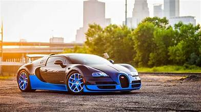

Our services

Welcome to Bugatti Racing, where passion for speed meets precision engineering.
Established in 1909 by Ettore Bugatti, our legacy in racing and automotive excellence spans over a century.
Rooted in our founder's vision of uncompromising performance and unparalleled luxury, Bugatti has consistently pushed the boundaries of automotive innovation.
At Bugatti Racing, we are driven by a relentless pursuit of perfection on the track. Our commitment to craftsmanship and technological advancement has led to numerous victories in prestigious racing circuits worldwide.
Each Bugatti vehicle is a masterpiece of artistry and engineering, blending cutting-edge technology with timeless design.
Join us as we continue to write the next chapter in automotive history, where every race is a testament to our dedication to excellence and our passion for the thrill of speed.
Explore the world of Bugatti Racing and experience the legacy of performance that defines us.
Bugatti's involvement in racing dates back to the early 20th century, paralleling the brand's inception in 1909 by Ettore Bugatti. Here are key milestones in the history of Bugatti racing:
Early Success in Grand Prix Racing (1920s):
Bugatti gained prominence in the 1920s with victories in prestigious Grand Prix events. Cars like the Type 35 became iconic for their dominance on the track, showcasing Bugatti's engineering prowess and speed.
Le Mans Dominance (1930s):
Bugatti achieved notable success at the 24 Hours of Le Mans endurance race during the 1930s. The Type 57G Tank, in particular, secured victories in 1937 and 1939, cementing Bugatti's reputation as a formidable force in endurance racing.
Post-War Challenges and Decline:
Following World War II, Bugatti faced challenges in regaining its pre-war racing dominance. Financial difficulties and changing automotive landscapes led to a decline in racing activities for several decades.
Revival and Modern Era (1990s-present):
The Bugatti brand was revived in the 1990s under Volkswagen ownership. While the focus shifted primarily to luxury hypercars such as the Veyron and Chiron, Bugatti continued to honor its racing heritage through limited-edition models and occasional appearances in events like the Goodwood Festival of Speed.
Experimental and Record-Breaking Cars:
In recent years, Bugatti has ventured into setting speed records with models like the Chiron Super Sport 300+, which exceeded 300 mph, showcasing Bugatti's ongoing commitment to pushing the limits of automotive engineering and performance.
Throughout its history, Bugatti's racing legacy has been characterized by innovation, precision craftsmanship, and a relentless pursuit of speed. Today, Bugatti remains synonymous with luxury and high-performance automotive engineering, continuing to inspire enthusiasts and set new benchmarks in the world of racing and hypercars.